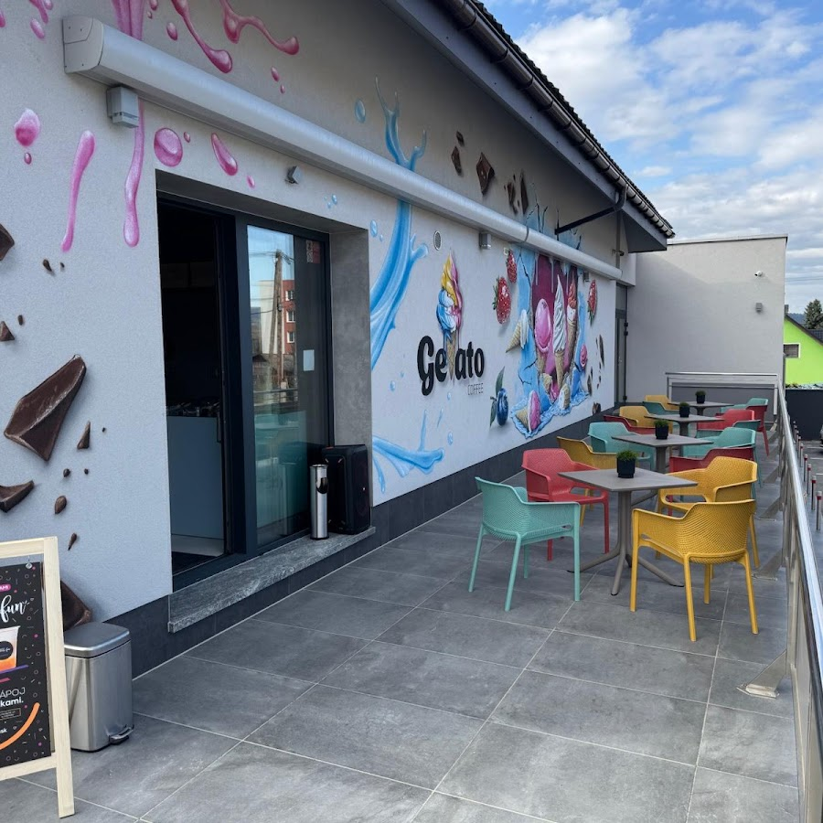

Poctivá zmrzlina a dobrá káva pod Babou horou. Terasa, na ktorej chutí leto.
Kde nás nájdete Čo ponúkame
Texty a fotky v tejto sekcii doplníme podľa vašej skutočnej vitríny a lístka — do ukážky nič nevymýšľame.
Príchute z vašej vitríny, odfotené a popísané tak, ako ich točíte — vrátane sezónnych noviniek.
príchute doplníme spoluVaša kávová ponuka od espressa po ľadové letné verzie — presne podľa lístka.
lístok doplníme spoluFrappé, ľadové nápoje a všetko, čím osviežujete Polhoru a turistov spod Babej hory.
ponuku doplníme spolu